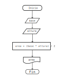
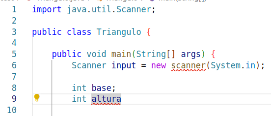

Table of Contents
1. Errores en programación
Es probable que el programa anterior no te haya funcionado a la primera, ¿por qué?
No hay nada de diferente entre un lenguaje natural como el español con un lenguaje de programación como Java. Ambos deben cumplir ciertas reglas para que la comunicación sea efectiva.
1.1. Propiedades del lenguaje
En general, hablando de lenguajes tenemos 3 propiedades específicas:
1.1.1. Sintaxis
Son reglas gramaticales para decir cómo se escriben las palabras y en qué orden deben ir. Por ejemplo tenemos la estructura Sujeto, verbo y predicado
"Yo como unos tacos dorados de pollo" ✔
"pollo unos yo. tacos Dorados como de" ✗
En programación una buena sintaxis sería:
int x = 13; if (x > 10) { System.out.println("x es mayor a 10"); }
Y donde no:
while ) true = 'asddfasdf' system.out[hola +1) }};
1.1.2. Semántica
El significado que tiene cada palabra del lenguaje y que tenga sentido la idea que se dice. Por ejemplo
"Era un gobierno facista." ✔
"Ayer iré a hablar con mi gato ha corrido desde 4 semanas siguientes" ✗
No debemos intercambiar tiempos presente, futuro, pasado perfecto aleatoriamente.
"Eta koshka nie biezhit" ✗
Esta línea es ruso, pero en español ninguna palabra tiene sentido por sí misma. La semántica también depende del lenguaje. Por ejemplo orange en español no existe, pero en inglés sí.
En programación un ejemplo de sintaxis sería
int edad = 25; ✔
Y donde no:
double AAAAAA = "Hola mundo"; ✗
Claramente un número de punto decimal no es "Hola mundo", no tiene sentido aunque sintácticamente sea correcto.
1.1.3. Pragmática
El significado que se le da a la oración dependiendo del contexto.
"El perro de tu tío es muy bravo." ✔
"¡Qué pedo!" ✔
Esta última regla no aplica directamente en lenguajes de programacion ya que una computadora siempre hará exactamente lo que fue programada para hacer, en otras palabras es determinístico. No es posible que el siguiente código
boolean esGrande = 5 > 9; System.out.println(esGrande);
imprima una cadena, o un número. Solo puede y debe imprimir el
booleano esGrande, o sea false.
Claramente un lenguaje natural es mucho más dificil que un lenguaje de programación porque tiene excepciones de lenguaje, conjugación de verbos, personas, son muchas palabras y vocabulario que memorizar!
En java, solo hay que aprender como unas 20 palabras y cómo es que se deben seguir las palabras para que tenga sentido, por lo que CUALQUIER PERSONA puede aprender a programar, ya que aprendió antes su lengua materna y es un lenguaje al final de cuentas.
Crearemos a propósito un programa con errores de sintaxis y semántica para que puedas ver cómo es que el compilador nos ayuda a detectarlos! El programa calculará el área de un triángulo, el diagrama de flujo será como el siguiente.

Figure 1: Diagrama de flujo para sacar un área de un triángulo.
Esta es una excepción y puedes copiar el código. Creamos un archivo
que se llame Triangulo.java.
import java.util.Scanner; public class Triangulo { public static void main(String[] args) { Scanner input = new scanner(System.in); double base; int altura System.out.print("Ingrese la base del triángulo: ); base = input.nextInt; System.out.print("Ingrese la altura del triángulo: "); altura = input.nextInt; int area base + altura; system.out.println("El área de triángulo es: " + area); input close(); } }
Aquí hay demasiados errores, cubriremos los más comunes. Tratamos de compilar con javac.
1.2. Errores sintácticos
Lo primero que verifica java es la sintaxis. El compilador de java nos muestra al menos un error:
$ javac Triangulo.java Triangulo.java:9: error: ';' expected int altura ^ Triangulo.java:11: error: unclosed string literal System.out.print("Ingrese la base del triángulo: ); ^ Triangulo.java:17: error: ';' expected int area base + altura; ^ Triangulo.java:17: error: not a statement int area base + altura; ^ Triangulo.java:20: error: ';' expected input close(); ^ 5 errors
El compilador ha sido programado para que nos de una idea de qué es
lo que puede estar fallando. A veces el mensaje es muy claro, otras
veces no tanto. Además nos dice en qué archivo y en qué línea de
código de ese archivo se encuentra el error, justamente en donde
señala la flechita ^. Por ejemplo, el error
Triangulo.java:9: error: ';' expected
int altura
^
Dice que en el archivo Triangulo.java, en la línea 9 está el error y nos
dice que se esperaba un ;

Corregimos esa línea agregando ; al final de la línea y lo
guardamos. Volvemos a compilar.
$ javac Triangulo.java
Triangulo.java:11: error: unclosed string literal
System.out.print("Ingrese la base del triángulo: );
^
Triangulo.java:17: error: ';' expected
int area base + altura;
^
Triangulo.java:17: error: not a statement
int area base + altura;
^
Triangulo.java:20: error: ';' expected
input close();
^
4 errors
Ahora son menos errores! Vamos con el siguiente error.
Triangulo.java:11: error: unclosed string literal
System.out.print("Ingrese la base del triángulo: );
^
Nos dice que el caracter " no cierra nunca. Es decir debemos cerrar
el mensaje dentro de " texto ". Ponemos dobles comillas al final de
los 2 puntos del mensaje como "Ingrese la base del triángulo: "
Corregimos, guardamos y volvemos a compilar, ahora tenemos todavía menos errores!
$ javac Triangulo.java Triangulo.java:17: error: ';' expected int area base + altura; ^ Triangulo.java:17: error: not a statement int area base + altura; ^ Triangulo.java:20: error: ';' expected input close(); ^ 3 errors
El tercer error fácilmente podríamos poner `;` para poder solucionarlo como el primer caso.
Triangulo.java:17: error: ';' expected
int area base + altura;
^
pero lo que hace falta es en realidad es la asignación de base +
altura al valor area, por lo que el mensaje del compilador aquí no
nos ayuda mucho porque generaríamos más errores si ponemos
;. Corregimos entonces como
int area = base + altura;
Con esta corrección, hemos matado 2 pájaros de un tiro. Guardamos y compilamos nuevamente. Ahora tenemos solamente 1 error más:
$ javac Triangulo.java
Triangulo.java:20: error: ';' expected
input close();
^
1 error
Aunque espera ; lo que en realidad queremos es utilizar el método
close() como el ejercicio pasado, por lo que si vemos detalladamente
solamente necesitamos un . entre input y close().
Con esto terminamos los errores de sintaxis :) Nuestro programa sigue teniendo errores :(
Nota: No por tener menos errores significa que estamos más cerca de
corregir el programa. A veces nos pueden aparecer como 20 errores,
pero todos son ocasionados por una {} que no cerró, o porque nos faltó
un ;, o no pusimos un =. Está decretado que esto les pasará a los
estudiantes de primeros semestres de ciencias de la computación y es un evento
canónico :)
1.3. Errores semánticos
Lo segundo que checa el compilador de Java son errores semánticos. No podemos ver errores semánticos sin antes haber arreglado los errores sintácticos. Los errores semánticos son:
$ javac Triangulo.java
Triangulo.java:6: error: cannot find symbol
Scanner input = new scanner(System.in);
^
symbol: class scanner
location: class Triangulo
Triangulo.java:12: error: cannot find symbol
base = input.nextInt;
^
symbol: variable nextInt
location: variable input of type Scanner
Triangulo.java:15: error: cannot find symbol
altura = input.nextInt;
^
symbol: variable nextInt
location: variable input of type Scanner
Triangulo.java:17: error: incompatible types: possible lossy conversion from double to int
int area = base + altura;
^
Triangulo.java:19: error: package system does not exist
system.out.println("El área de triángulo es: " + area);
^
5 errors
El primer error se debe a que Scanner lo pusimos en
minúsculas. Recordemos que los nombres de las clases siempre
empiezan con mayúsculas. En realidad estamos llamando al
constructor de Scanner que se debe llamar exactamente igual que
la clase. En este caso nuestra clase es Scanner. Justamente el error
nos dice que no encuentra referencia a scanner. Ponemos en
mayúscula Scanner.
Triangulo.java:6: error: cannot find symbol
Scanner input = new scanner(System.in);
^
symbol: class scanner
location: class Triangulo
El siguente error tiene que ver con que no podemos combinar peras con manzanas. En este caso no podemos sumar números enteros con números de punto decimal puesto a que perderíamos información como truncar el número; claro que en lápiz y papel sí lo podemos hacer, pero la computadora para ser precisa debe tener todo del mismo tipo.
symbol: variable nextInt
location: variable input of type Scanner
Triangulo.java:17: error: incompatible types: possible lossy conversion from double to int
int area = base + altura;
^
Por ejemplo, la suma
\begin{equation} 4 + 5.00099 = 9.00099 \end{equation}nos fijamos que el resultado es punto decimal, no de valor entero. Si sumamos guardando el resultado en un entero (como está en el código, tendremos:
\begin{equation} 4 + 5.00099 = 9 \end{equation}
Lo cual es incorrecto por eso nos dice el compilador: posible
pérdida de información. Por lo que el resultado que guardamos en area
no debe ser tipo int (sin punto decimal) sino que debe ser de tipo
double (con punto decimal).
Finalmente, System también es una clase y nuevamente está empezando en
minúscula! Solamente debemos poner mayúscula.
Triangulo.java:19: error: package system does not exist
system.out.println("El área de triángulo es: " + area);
^
Después de corregir los errores semánticos podremos compilar nuestro programa sin problemas. Esto no significa que nuestro programa ya sea un buen programa. Todavía faltan 2 últimos tipos de errores. Compilamos y ejecutamos nuestro programa con:
$ java Triangulo
Nota. Es importante aclarar que no debes memorizar cómo solucionar cada caso, este mini poder se va adquiriendo a lo largo de la programación, así que solamente programa y lo adquirirás!
1.4. Errores lógicos
Este tipo de errores son los más difíciles de detectar ya que no son capturados por el compilador, además tiene que ver que nuestra salida sea la esperada.
Si ejecutamos una vez nuestro programa, y le damos 2 números, aleatorios, por ejemplo 5 y 6, el resultado es el siguiente.
$ java Triangulo Ingrese la base del triángulo: 5 Ingrese la altura del triángulo: 6 El área de triángulo es: 11.0
El programa termina correctamente, pero el valor que nos da, no es el
esperado, puesto que la fórmula para calcular el área de un triángulo
es (base * altura)/2;
Por lo que \((5*6)/2 = 30/2 = 15\) es diferente de 11! Este tipo de errores se les suele atacar con algo llamado pruebas unitarias o tests, es decir, probamos con valores conocidos esperando resultados conocidos para saber si está bien el programa o no. Existe toda un área de la industria a realizar este tipo de pruebas con la finalidad de que el programa sea lo más correcto posible.
Corregimos entonces nuestro programa para que calcule el área correctamente.
Estos errores salen a la luz cuando confiamos que nuestro programa hará lo que tiene que hacer pero no lo hace, como por ejemplo ponerle play a un video y que no pase nada, o que la suma de nuestros ahorros nos de un número negativo!
1.5. Errores en tiempo de ejecución
Todavía hay un último tipo de error y es de esos errores que son difíciles de determinar ya que existen hasta que existen.
Estos son los errores son cuando el usuario se quiere pasar de listo, o nuestro programa no es lo suficientemente robusto para procesar cualquier entrada, por ejemplo, ejecutemos nuestro programa, pero en lugar de darle números, le pasamos una palabra.
$ java Triangulo Ingrese la base del triángulo: Pichu Exception in thread "main" java.util.InputMismatchException at java.base/java.util.Scanner.throwFor(Scanner.java:939) at java.base/java.util.Scanner.next(Scanner.java:1594) at java.base/java.util.Scanner.nextInt(Scanner.java:2258) at java.base/java.util.Scanner.nextInt(Scanner.java:2212) at Triangulo.main(Triangulo.java:12)
Nos mostrará algo de Exception, errores que proceden de una
entrada no definida, en este caso cuando un usuario (nosotros) le
pasamos en lugar de un número algo que no sea número. Claramente si
siempre pasamos una entrada válida nuestro programa funcionará
correctamente, pero nunca falta el usuario que en un campo de País
ponga su fecha de nacimiento ._.
También es posible que nuestro mismo programa genere estados
inconsistentes, por ejemplo el clásico pantallazo azul de windows es
un error en tiempo de ejecución, también conocidos en java como
RuntimeException. O que un programa se cierre inmediatamente
es parte de errores en tiempo de ejecución.
Finalmente que un programa no termine cuando debería terminar también es un error de tiempo de ejecución ya que por definición de un algoritmo debe terminar, excepto cuando el usuario decida no terminarlo.
Saber cómo corregir errores no es trivial, no hay otra forma más que intentarlo y aprendiendo de las fallas :( Dicen que para poder hacer algo bien debes fallar otras 100 veces. Al final es aprendizaje, y todo lo que aprendes nadie te lo quitará :)